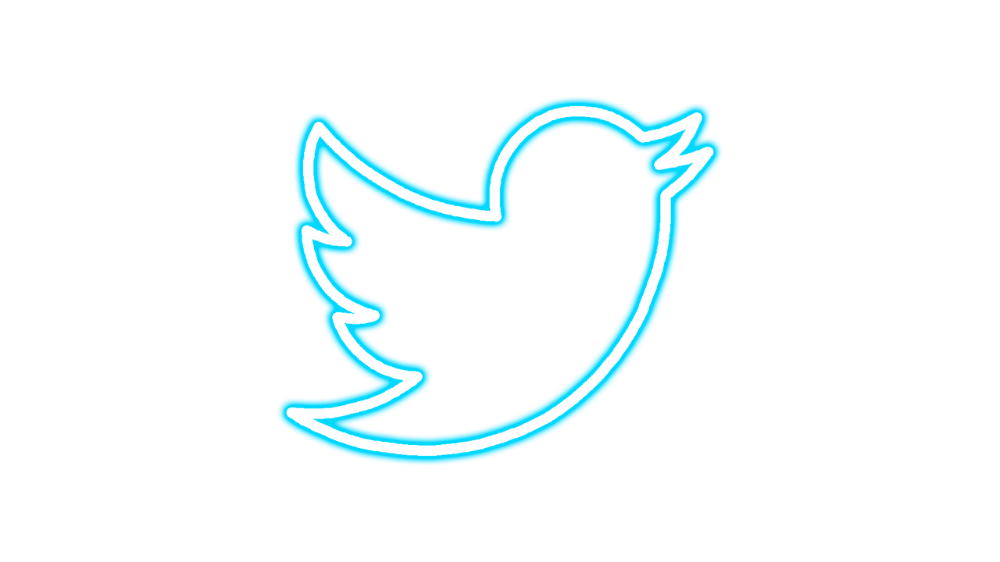

TWEETBOT
Project Mission:
Build a safety device to help people in dangerous situations FEEL safe and BE safe.
This safety device features a breadboard, camera attached to the headband, LCD keychain, Raspberry Pi, and a GPS sensor.
The tweetbot is a self-defense product that has been prototyped, built, and tested.
What does it do?
The device continuously reads data from the GPS sensor and sends it to the raspberry pi, waiting for user input through the button. When a person is feeling unsafe, once they press the button on the headband, a photo of their surroundings is taken, the LCD keychain provides feedback to the user- letting them know a picture has been taken, and a tweet sharing the data from the gps sensor is automatically sent out
SKILLS:
MY ROLE:
Head of programming